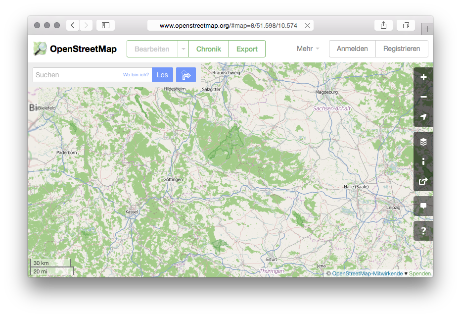
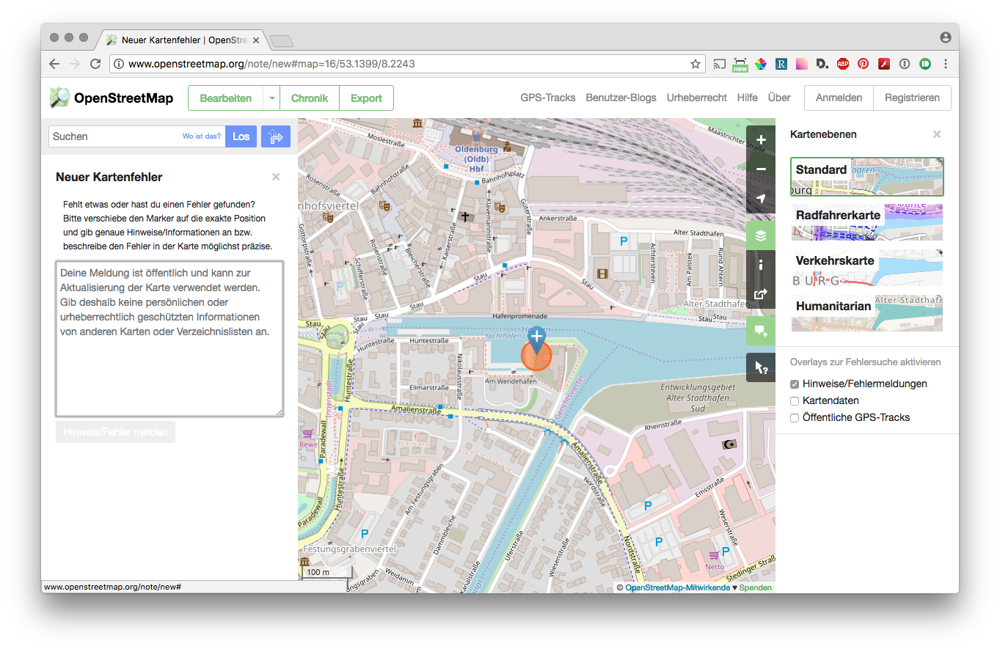
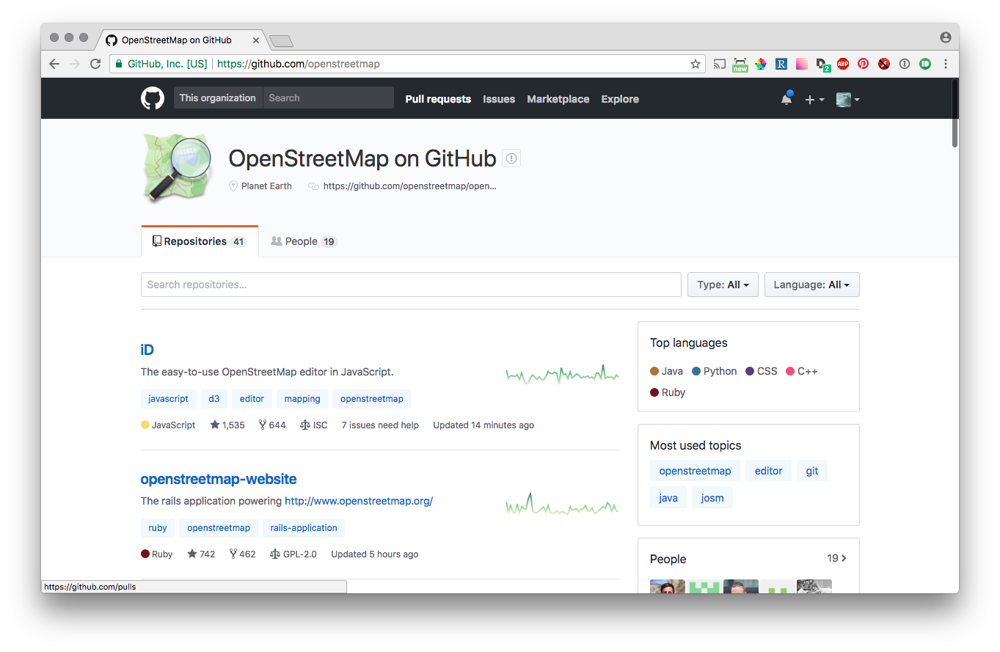

class: center, middle, title # Was ist Open Source, was sind freie Daten und wie funktioniert das Alles? ## Ein Blick auf Daten, Software und den FOSSGIS e.V. .small[FOSSGIS Konferenz 2018, Bonn] <br> .small[Astrid Emde & Dominik Helle & Marco Lechner & Till Adams] --- # Agenda - Open Source und Freie Software - OSGeoLive - Software - Desktop-GIS - Web GIS - Kartenserver & Kartenproxy - Geo-Bibliotheken - Datenbanken - Daten - OpenStreetMap - Institutionen - FOSSGIS e.V. - OSMF - OSGeo Foundation --- # Open Source und Freie Software - Freie Software nutzen - Freie Software entwickeln (lassen) - Mitmachen für jedermann --- # Freie Software nutzen - Die 4 Freiheiten Freier Software - https://fsfe.org/about/basics/freesoftware.de.html - Freie Software installieren - Freie Software und Dokumentation - https://qgis.org/de/docs/index.html - Schulungen für Freie Software - Support für Freie Software --- # Support ## Wie bekomme ich Hilfe bei Problemen? - frei und schnell: IRC - <#project>@freenode - frei und ausführlich - Mailinglisten - deutsch: https://lists.fossgis.de/listinfo - fossgis-talk: https://lists.fossgis.de/mailman/listinfo/fossgis-talk-liste - international: https://lists.osgeo.org/mailman/listinfo - professionell - SLAs: https://www.osgeo.org/service-providers --- # Freie Software entwickeln - Die 4 Freiheiten Freier Software - https://fsfe.org/about/basics/freesoftware.de.html - Das Ding mit den Lizenzen - https://choosealicense.com - Richtig ausschreiben - Community building --- # Woran erkenne ich ein gutes Open Source Projekt? - OSGeo projects - https://www.osgeo.org/projects/ - Aktivität - https://live.osgeo.org/de/metrics.html - https://www.openhub.net/p?ref=homepage&query=GIS --- # Ist Open Source Software immer kostenlos? - was erwarten Sie von Freier Software? - wieviel sind Sie bereit für gute Software zu bezahlen? - wofür möchten Sie zahlen? - Lizenzen, Werbung, Abhängigkeiten - Programmierarbeit, Freiheit, Gemeinschaft --- # Mitmachen für jedermann / -frau - Programmieren?!? Uuuhh! But ... I ... äh ... can ...NOT code! - Dokumentieren - Nutzen - Melden statt Motzen --- class: center, middle, title # OSGeoLive --- .center[] # Was ist OSGeoLive? - kein klassiches Softwareprojekt - Sammlung von über 50 Open-Source-Software-Projekten - Bereitstellungen von Testdatensätzen u.a. Auszug von OpenStreetMap - Mehrsprachige Dokumentation - Jedes Jahr erscheint eine neue Version -- .center[### → Software testen, ohne vorherige Installation] <!-- - wird von einer großen Anzahl von Freiwilligen verwaltet - keine kommerziellen Interessen --> --- .center[] # Was ist OSGeoLive? - Komplettes Betriebssystem (Lubuntu) - Alle Softwarekomponenten installiert <img src="img/screenshots/osgeolive_menu.png" width="70%" height="70%"> --- .center[] # Schon Interesse? - OSGeoLive Downloads http://live.osgeo.org/de/download.html - ISO DVD-Image (3.7GB) - HDD für virtuelle Maschinen (VirtualBox, VMWare, KVM. 3.2GB) --- class: center, middle, title # Die Praxis <!-- Starten der Live DVD und zeigen mit einigen Klicks was so drauf ist --> <!-- Aber was ist den nun eigentlich a vorhanden? --> --- # Die Software - Desktop-GIS - Web GIS - Kartenserver & Kartenproxy - Geo-Bibliotheken - Datenbanken <!-- Software unterteilt sich in verschiedene Kategorien. Deutlich wird aber, dass jedes "Geo"-Problem auch mit Open Source Software gelöst werden kann Kurzen überblick über die Programme verschaffen. --> --- # Desktop-GIS <div class="projects"> QGIS<br/> <img src="img/project_logos/logo-QGIS.png" width="100"/> </div> <div class="projects"> GRASS GIS<br/> <img src="img/project_logos/logo-GRASS.png" width="100"/> </div> <div class="projects"> gvSIG<br/> <img src="img/project_logos/logo-gvSIG.png" width="120"/> </div> <div class="clear projects"> uDig<br/> <img src="img/project_logos/logo-uDig.png" width="120"/> </div> <div class="projects"> OpenJUMP<br/> <img src="img/project_logos/logo-openjump.png" width="120"/> </div> <div class="projects"> SAGA<br/> <img src="img/project_logos/logo-saga.png" width="120"/> </div> <!-- Einige wollen wir Ihnen ganz kurz vorstellen und sie auf Vorträge im Programm hinweisen --> --- # Desktop-GIS: QGIS .center[<img src="img/screenshots/qgis.png" width="60%">] .center.info[QGIS ist großes Thema an allen Konferenztagen.] <!-- - Das wohl aktuell populärste GIS System - Aktive Weiterentwicklung --> <!-- Es gibt soviele Vorträge die sich mit QGIS beschäftigen, dass man die hier gar nicht auflisten kann --> --- # Desktop GIS: GRASS GIS .center[<img src="img/screenshots/grass.png" width="60%">] .center.info["GRASS GIS" am 21.3. und 23.3] <!-- Es gibt soviele Voträge die sich mit QGIS beschäftigen, dass man die hier gar nicht auflisten kann --> --- # Web GIS <div class="projects"> OpenLayers<br/> <img src="img/project_logos/logo-OpenLayers.png" width="120"/> </div> <div class="projects"> Leaflet<br/><img src="img/project_logos/logo-leaflet.png" width="120"/> </div> <div class="projects"> Cesium<br/><img src="img/project_logos/logo-cesium.png" width="120"/> </div> <div class="projects"> Geomajas<br/><img src="img/project_logos/logo-geomajas.png" width="120"/> </div> <div class="projects clear"> Mapbender<br/><img src="img/project_logos/logo-Mapbender3.png" width="120"/> </div> <div class="projects"> GeoMOOSE<br/><img src="img/project_logos/logo-geomoose.png" width="120"/> </div> <div class="projects"> GeoNode<br/><img src="img/project_logos/logo-geonode.png" width="120"/> </div> <!-- Bibliotheken zum Anzeigen von Karten Auch Web GIS Frameworks: Erstellen von komplexen Geoportalen oder Kartenanwendungen bis hin zur Benutzerverwaltung --> --- # Web GIS: OpenLayers .center[<img src="img/screenshots/openlayers.png" width="80%">] .center.info["OpenLayers" diverse Vorträge und Workshops] --- # Web GIS: Cesium .center[<img src="img/screenshots/cesium.png" width="80%">] --- # Web GIS: Mapbender .center[<img src="img/screenshots/mapbender3.png" width="70%">] .center.info[Mapbender Vortrag und Anwendertreffen am **Mittwoch**</br>Workshop am **Donnerstag**] --- # Serverkomponenten <div class="projects"> GeoServer<br/> <img src="img/project_logos/logo-GeoServer.png" width="80"/> </div> <div class="projects"> MapServer<br/> <img src="img/project_logos/logo-mapserver-new.png" width="80"/> </div> <div class="projects"> Mapnik<br/> <img src="img/project_logos/logo-mapnik.png" width="80"/> </div> <div class="projects"> MapProxy<br/> <img src="img/project_logos/logo-mapproxy.png" width="80"/> </div> <div class="projects clear"> EOxServer<br/> <img src="img/project_logos/logo-eoxserver.png" width="80"/> </div> <div class="projects"> GeoNetwork<br/> <img src="img/project_logos/logo-GeoNetwork.png" width="80"/> </div> <div class="projects"> pycsw<br/> <img src="img/project_logos/logo-pycsw.png" width="80"/> </div> <div class="projects"> deegree<br/> <img src="img/project_logos/logo-deegree.png" width="80"/> </div> <div class="projects clear"> QGIS Server<br/> <img src="img/project_logos/logo-QGIS.png" width="80"/> </div> <div class="projects"> 52North WPS/SOS<br/> <img src="img/project_logos/logo_52North_160.png" width="80"/> </div> <div class="projects"> Zoo Project<br/> <img src="img/project_logos/logo-Zoo.png" width="80"/> </div> <!-- Egal ob in Web oder Desktop, man benötigt Software und Bibliotheken, welche die Karten erstellt und visualisiert und über Standardschnittstellen zur Verfügung stellt --> --- # Serverkomponenten: MapServer .center[<img src="img/screenshots/mapserver.png" width="60%">] .center.info[MapServer Workshop und Thema in diversen Vorträgen] --- # Serverkomponenten: Mapnik .center[<img src="img/screenshots/mapnik.png" width="70%">] .center.info[Mapnik OSM Daten mit Mapnik und Python rendern] --- # Serverkomponenten: deegree .center[<img src="img/screenshots/deegree.png" width="60%">] .center.info[deegree - Vortrag INSPIRE Download Service mit deegree und PostgreSQL] --- # Serverkomponenten: GeoServer .center[<img src="img/screenshots/geoserver.png" width="70%">] .center.info[GeoServer Vorträge und Workshops] --- # Serverkomponenten: QGIS Server .center[<img src="img/screenshots/qgis-mapserver-screenshot.jpg" width="60%">] --- # Serverkomponenten: 52North WPS/SOS .center[<img src="img/screenshots/52north.png" width="60%">] --- # Geo-Bibliotheken <div class="projects"> GDAL/OGR<br/> <img src="img/project_logos/logo-GDAL.png" width="100"/> </div> <div class="projects"> GeoTools<br/><img src="img/project_logos/logo-GeoTools.png" width="100"/> </div> <div class="projects"> GEOS<br/><img src="img/project_logos/logo-GEOS.png" width="100"/> </div> <div class="projects clear"> Proj.4<br/><!--<img src="img/project_logos/logo-metacrs.png" width="100"/>--> </div> <div class="projects"> libLAS<br/><img src="img/project_logos/logo-libLAS.png" width="100"/> </div> <div class="projects"> JTS<br/><img src="img/project_logos/jts_project.png" width="100"/> </div> --- # Datenbanken <div class="projects"> PostGIS<br/> <img src="img/project_logos/logo-PostGIS.png"/> </div> <div class="projects"> SpatialLite<br/> <img src="img/project_logos/logo-spatialite.png"/> </div> <div class="projects"> rasdaman<br/> <img src="img/project_logos/logo-rasdaman.png"/> </div> <div class="projects"> pgRouting<br/> <img src="img/project_logos/logo-pgRouting.png"/> </div> <!-- Bibliotheken zum Anzeigen von Karten Auch Web GIS Frameworks: Erstellen von komplexen Geoportalen oder Kartenanwendungen bis hin zur Benutzerverwaltung --> --- # Datenbanken: PostGIS .center[<img src="img/screenshots/postgis.png" width="65%">] .center.info[PostGIS Vorträge und Workshops] --- # Datenbanken: pgRouting .center[<img src="img/screenshots/pgrouting.png" width="65%">] --- class: middle, center, title # Software ist ohne Daten nutzlos --- # Daten <div class="projects"> Natural Earth<br/> <img src="img/project_logos/logo-naturalearth.png"/> </div> <div class="projects"> OpenStreetMap<br/> <img src="img/project_logos/logo-osm.png"/> </div> <div class="projects"> North Carolina<br/> <img src="img/project_logos/logo-ncdataset.png"/> </div> <div class="projects"> netCDF<br/> <img src="img/project_logos/logo-netcdf.png"/> </div> --- class: center, middle, title # OpenStreetMap-Projekt <!-- Hinweis auf weitere offene Datenquellen z.B. Natural Data --> --- # Was ist OpenStreetMap überhaupt? .center[] -- #.center[Nur eine Karte?] <!-- Auf den ersten Blick nur eine Karte im Internet --> --- # Was ist OpenStreetMap überhaupt? - Sammlung freier Daten mit Ortsbezug - wurde 2004 in Großbritannien gegründet - Ziel: weltweite, freie Kartendaten --- class: center, middle ##OpenStreetMap will für Kartendaten das sein, was Wikipedia für enzyklopädisches Wissen ist. --- # Wieso brauchen wir OpenStreetMap? - freie Daten ermöglichen das Erstellen freier Karten - aktuelle Daten auch ohne kommerzielles Interesse - Details, die viele kommerzielle Anbieter nicht haben - Platz für neue Ideen --- # Wie kann ich bei OpenStreetMap mit machen? - Als Mapper - Als Melder .center[] --- # Wie kann ich bei OpenStreetMap mit machen? - Als Entwickler - Als Kartograf - Als "Arbeiter" .center[] --- # Wie kann ich bei OpenStreetMap mit machen? - Machen Sie Werbung für OpenStreetMap! - Geben Sie Ihre Daten frei - Mit Geld ;-) --- class: center, middle, title # FOSSGIS e.V. --- class: center, middle, title # OsGeo --- # Dankeschön .left-column[ Astrid Emde<br> `astrid.emde@fossgis.de`<br> `@astroidex` ] .right-column[ Dominik Helle<br> `dominik.helle@fossgis.de`<br> `@geododo` ] .left-column[ Marco Lechner<br> `marko.lechner@fossgis.de`<br> `@marcolechner` ] .right-column[ Till Adams<br> `till.adams@fossgis.de`<br> `@t_adams` ] --- class: center, middle # Fragen? --- # Viel Spaß auf der FOSSGIS Konferenz 2018! .center[<img src="img/logos/fossgis-konferenz-2018.png" width="20%">] ## Nicht verpassen! - Abendveranstaltung am Mittwoch "Campus Dialoge" - FOSSGIS e.V. Vollversammlung am Donnerstag - OSM Quiz am Freitag - Sektempfang des FOSSGIS e.V. am Freitag - OSM Unkonferenz und Mappertreffen am Samstag